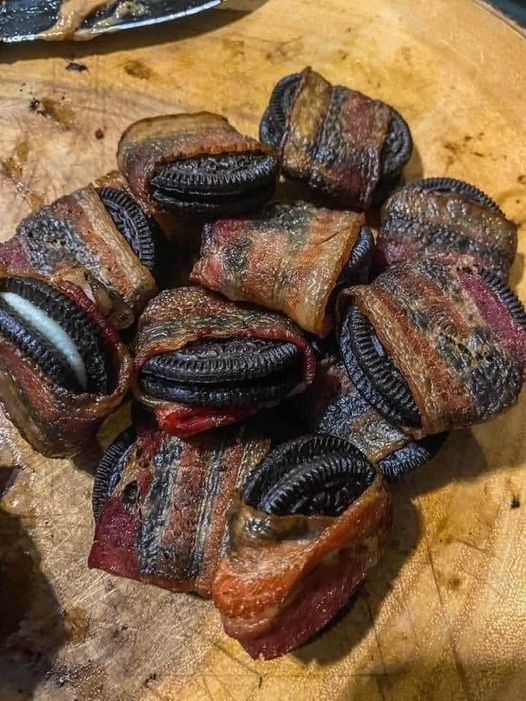

A Sweet and Savory Delight

Sfogliatelle
This sweet and savory treat combines the classic delight of Oreo cookies
with the irresistible crunch of crispy bacon. Dip the bacon in rich, melted chocolate
for an added layer of decadence. Prepare to surprise your taste buds with this adventurous and unforgettable combination.
Ingredients
- 6 Oreo cookies
- 6 slices of cooked bacon
- 1/4 cup chocolate chips
Recipe Instructions
- Cook the bacon: Preheat your oven to 400°F (200°C). Place the bacon slices on a baking sheet lined with parchment paper.
- Prepare the chocolate: In a microwave-safe bowl or using a double boiler, melt the chocolate chips until smooth and creamy.
- Dip the bacon: Take each cooked bacon slice and dip it into the melted chocolate, coating it entirely.
- Set the bacon on a tray: Place the chocolate-covered bacon on a plate or tray lined with parchment paper. Allow the chocolate to cool and harden slightly.
- Prepare the Oreos: Twist open each Oreo cookie and place one piece of chocolate-covered bacon inside.
- Serve and enjoy: Your Oreo cookies with bacon are now ready to be served.
Home
Cannoli